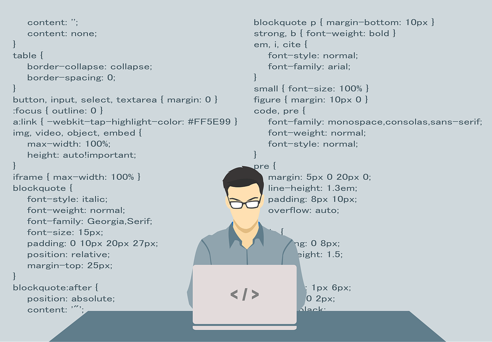

About Me
My name is Austin Brackney and I am a student at BYU-Idaho. This site showcases some of the projects I built and helps me display a lot of the skills I learned to make a good web page. Browse the ICE (In-Class Exercises) projects below or click on the ice link above to see some of the projects I have worked on while here at BYU-Idaho.
Featured Projects
- Apostle Spotlight — A page showcasing the first presidency and twelve apostles images. Created to practice using grid css.
- Favorite Devotional — media-driven devotional layout.
- Gallery — image gallery with thumbnails and large views.
- Grid Flags — CSS grid flag layout demonstrating responsive design.
- Positioning — examples of CSS positioning techniques.
- Prophet Cards — card-style profiles with imagery.
- Signup Form — a form example with basic validation.
- Valentines — a themed static page with decorative styles.
